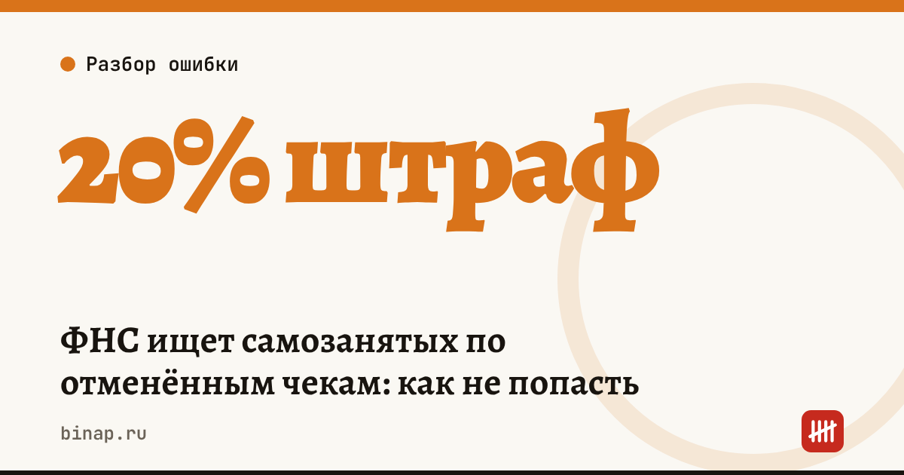

ФНС ищет самозанятых по отменённым чекам: как не попасть

ФНС тестирует модель, которая находит самозанятых, систематически аннулирующих чеки в «Мой налог». По данным «Ведомостей» и «Коммерсанта», за девять месяцев 2026 года к ответственности привлекли около 3 тыс. самозанятых на сумму около 300 млн ₽. Одна отмена чека — не нарушение, но отмены без причины теперь заметны.
Коротко
- Модель работает в регионах в опытном режиме. О ней 30 октября 2026 года рассказал начальник управления оперативного контроля ФНС Владимир Мальцев.
- Признаки риска: систематические отмены чеков за период и отмена чека партнёром — банком или цифровой платформой.
- Штраф за нарушение порядка формирования чека — 20% от суммы расчёта, при повторном нарушении в течение шести месяцев — 100% (ст. 16 закона № 422-ФЗ).
- Законные причины отмены: чек сформирован ошибочно или деньги вернули покупателю.
- Ставки НПД — 4% с физлиц и 6% с компаний и ИП, лимит дохода — 2,4 млн ₽ в год.
Сроки, изменения и разборы для ИП и самозанятых — каждое утро в Telegram и MAX. Подпишитесь, чтобы не пропустить.
Почему ФНС следит за отменами
Чек в «Мой налог» — это и есть учёт дохода самозанятого: налог считается по выданным чекам. Если получить деньги и аннулировать чек, доход «исчезает», налог уменьшается, а до лимита 2,4 млн ₽ остаётся больше места. Именно такую схему и ищет модель.
По словам Ивана Литвинова из Объединения самозанятых России (по данным Клерка), само по себе аннулирование нарушением не является: бывают ошибки в сумме, в данных заказчика, возвраты за отменённые заказы. Объединение просит, чтобы модель учитывала причину отмены, а самозанятого сначала выслушивали.
Сколько стоит ошибка: расчёт
Расчёт редакции: чек на 100 000 ₽ аннулирован, хотя деньги клиенту не возвращали.
| Сумма | |
|---|---|
| Штраф 20% от суммы расчёта | 20 000 ₽ |
| Повторное нарушение в течение полугода — 100% | 100 000 ₽ |
| Налог, который всё равно придётся заплатить (4–6%) | 4 000–6 000 ₽ |
Как отменять чеки правильно
- Ошибка в чеке — сумма, наименование услуги или ИНН заказчика. Аннулируйте чек с причиной «Чек сформирован ошибочно» и сразу сформируйте правильный.
- Возврат денег — аннулируйте чек с причиной «Возврат средств» только после того, как деньги действительно вернулись. Сохраните подтверждение перевода.
- Отмена заказа до оплаты — чек не нужен: его формируют при получении денег.
- Работаете через банк или платформу, которые формируют чеки за вас? Узнайте, в каких случаях они аннулируют чеки сами, и следите за этим в приложении.
Что сделать сейчас
- Откройте «Мой налог» и посмотрите отменённые чеки за год. У каждого должна быть понятная причина.
- К каждой отмене сохраните подтверждение: переписку с заказчиком, документ о возврате, новый правильный чек.
- Если доход приближается к 2,4 млн ₽, не «гасите» чеки — заранее продумайте переход на ИП. Как это сделать, — в статье как открыть ИП онлайн.
- Работаете через платформы — проверьте и новые правила: правило 60 часов для самозанятых.
Зарегистрировать ИП или ООО и сразу открыть расчётный счёт онлайн: ссылка
Всё о самозанятости — в статье как стать самозанятым.
Частые вопросы
Можно ли аннулировать чек в «Мой налог»? Да, если чек сформирован ошибочно или деньги вернули покупателю. Сохраняйте подтверждение причины.
Какой штраф за аннулирование чека без причины? 20% от суммы расчёта, при повторном нарушении в течение шести месяцев — 100% суммы.
Накажут ли за одну отмену? Модель ищет систематические отмены. Одна обоснованная отмена с подтверждением нарушением не является.